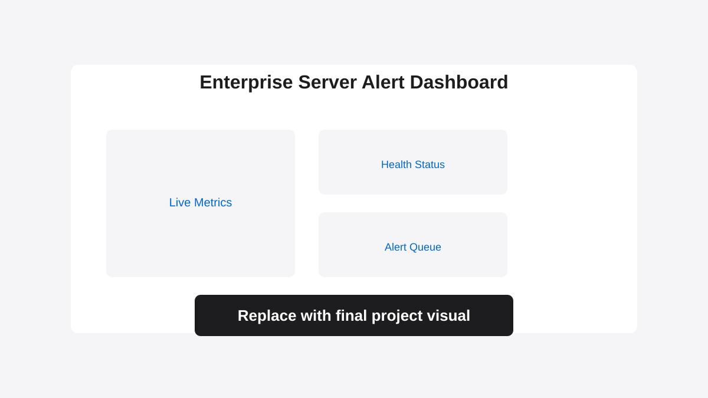

Critical incident response was delayed by fragmented monitoring.
Manual checks and disconnected tools prevented fast detection and centralized visibility.
Real-time monitoring dashboards and automated data pipelines for immediate issue response.

Manual checks and disconnected tools prevented fast detection and centralized visibility.
Centralized server state, trends, and operational visibility.
Automated classification and rapid notification routing.
I can architect monitoring and alert systems that improve uptime confidence and response speed.
Book a Free Discovery Call